五十三年，和他身后的三百七十六年
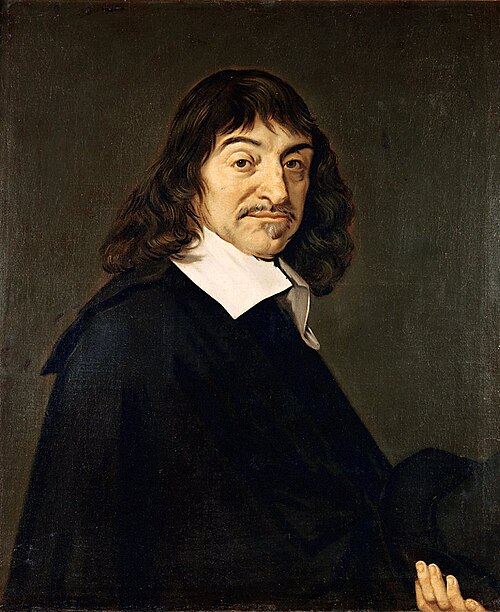
生于都兰的拉海
La Haye en Touraine，在外祖母家中出生。母亲在他一岁多时去世。父亲是布列塔尼高等法院的推事，长期不在身边。
拉弗莱什耶稣会学院
约八年半。前五六年是文法学校（拉丁文、希腊文、古典文学），后三年是完整的经院哲学课程——亚里士多德-阿奎那体系的逻辑、伦理、物理、形而上学，外加数学四科。他后来要推翻的那套东西，是他被最好地训练过的东西。笛卡尔自述学代数"除了读克拉维乌斯（Clavius）的书之外没有别的老师"。（入学与离校年份在各权威来源间有 ±1 年浮动。）
在布雷达遇见 Isaac Beeckman
二十二岁的笛卡尔在荷兰军中驻扎，结识了长他七岁的 Beeckman。两人共处约两个月，讨论"物理-数学"（physico-mathematica）。学界普遍认为，笛卡尔对物理学的兴趣就是在这里被点着的——Beeckman 是机械论与微粒论自然哲学的早期倡导者，笛卡尔后来的惯性思想与运动守恒对他有明确的亏欠。
炉室里的三个梦
在多瑙河畔的 Neuburg（近乌尔姆），他把自己关在一间生了炉子的屋子里整天思考，那一夜做了三个梦，此后确信自己被指示去建立一门"奇妙的科学"。
移居荷兰，二十年流亡开始
此后二十余年不断搬家：多德雷赫特、弗拉讷克、阿姆斯特丹、莱顿、代芬特尔、乌得勒支、埃赫蒙德……（各来源在具体年份上有出入。）他躲的是法国的社交、名声和打扰——他要的是能不被人找到地工作。
伽利略受审，他把书收了回去
1633 年 7 月，笛卡尔告诉梅森《世界》已近完成，只待誊清。随后伽利略被判罪的消息传来——《世界》采用的同样是哥白尼体系。他立刻决定不出版，并在给梅森的信里说，他几乎下定决心把手稿全部烧掉，至少不让任何人看到。
这是理解他此后一切写作策略的钥匙。那种极度谨慎的、层层设防的表述方式，不是性格，是环境。
《谈谈方法》＋三附录，莱顿，匿名出版
书商 Jan Maire，法文。笛卡尔以两百本作者赠书作为报酬。匿名。四年前的教训还热着。
《第一哲学沉思集》，巴黎
拉丁文，出版商 Michael Soly，梅森在巴黎全程操办——选在巴黎而非居住地荷兰，是担心荷兰的新教牧师干预。1642 年第二版转到阿姆斯特丹的 Elzevir，加入第七组反驳。
伊丽莎白公主的第一封信
二十四岁的流亡公主写信问他：一个纯粹思维的实体，究竟如何推动身体？此后六年通信不断。这是笛卡尔一生中遇到的最难缠、也最有价值的对话者。
《哲学原理》，阿姆斯特丹
拉丁文，Elzevir。他心目中的主著——整套自然哲学的系统化。1647 年经他本人核准的法译本出版。
赴斯德哥尔摩；《论灵魂的激情》出版
应克里斯蒂娜女王之邀前往瑞典，协助筹建科学院并为女王授课。同年 11 月《论灵魂的激情》在巴黎与阿姆斯特丹印行——他生前出版的最后一本书。
卒于斯德哥尔摩，五十三岁
主流说法是肺炎。女王要求他每周三次在清晨五点、于寒冷的城堡中授课，而他一生习惯卧床到中午——这个作息冲突被普遍视为健康崩溃的诱因。
身后：一具遗骨，两个地名，和一个消失的校名
那些他生前不敢出的书，终于出了
两本不同的书，别混在一起：《论人》（L'Homme）1662 年先在莱顿出了拉丁文译本《De homine》（译者 Schuyl），1664 年才由 Clerselier 整理出法文原本；《世界》（Le Monde，写于 1629–1633，因伽利略事件搁置）也在 1664 年由 Clerselier 首次出版法文版。
遗骨被秘密运回法国
法国大使 Hugues de Terlon 从斯德哥尔摩的新教墓园中起获（笛卡尔是天主教徒，当年只能葬在受限的墓地）。1819 年最终迁葬圣日耳曼德佩修道院时，遗骨已经少了一根手指和整个颅骨。
他的出生地两次改名，最后只剩他的姓
1802 年 10 月 2 日，La Haye-en-Touraine 改名为 La Haye-Descartes；1967 年与邻镇 Balesmes 合并后，再次改名，"La Haye"被去掉，只留下 Descartes。今天你在法国地图上能找到一个叫"笛卡尔"的小镇。
而巴黎的那所笛卡尔大学，把他的名字弄丢了
巴黎第五大学（Université Paris Descartes）2019 年 3 月与巴黎第七大学合并为 Université de Paris；这个校名 2021 年 12 月 29 日被法国国务院裁定具误导性而撤销；2022 年 3 月，学校正式更名为 Université Paris Cité。
"Descartes"就这样从法国最著名的那所以他命名的大学校名里消失了。与此同时，cartésien 这个词还牢牢活在日常法语里，形容一个人条理清晰、讲逻辑、脚踏实地——偶尔也带点贬义，暗指过于刻板。名字从建筑上掉了下来，倒是长进了语言里。
对话者、对手，和三个替他收拾残局的人
先看三张脸
同一个人，三幅同时代或近乎同时代的画像。请注意最有名的那张，恰恰不是原作。
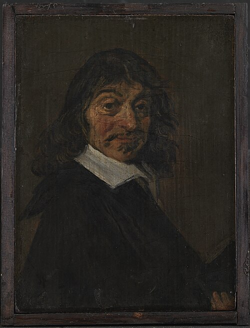
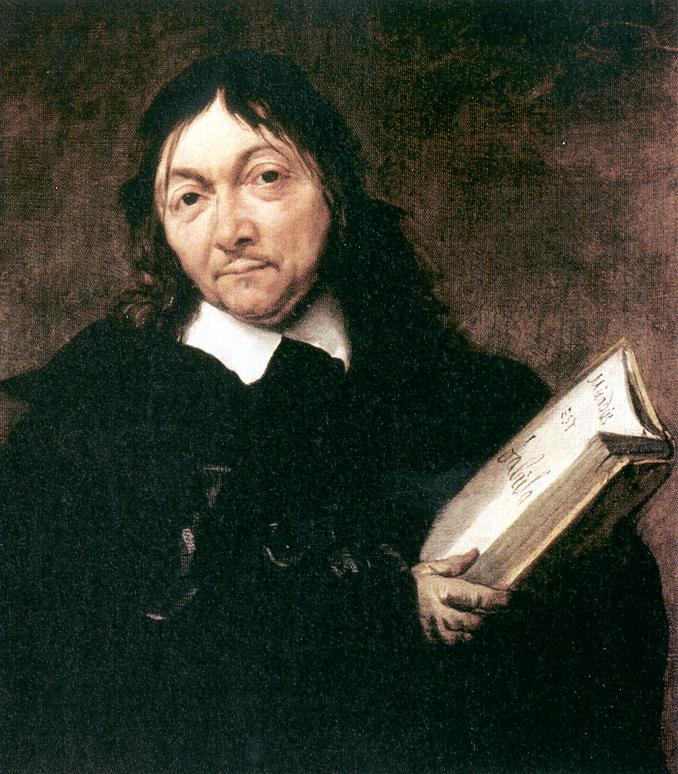
点火的人
Isaac Beeckman（1588–1637）
荷兰自然哲学家。1618 年在布雷达与二十二岁的笛卡尔相遇，把机械论物理学的问题意识交给了他。两人后来因优先权问题闹翻——笛卡尔在信里刻薄地否认自己受过他任何影响，而这封信恰恰证明了他受过。
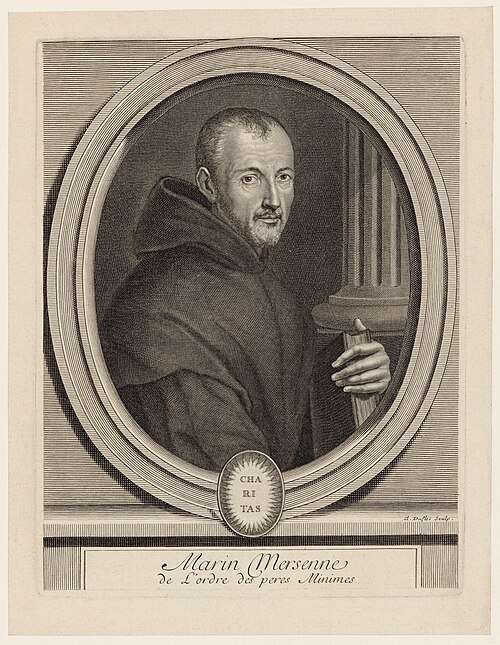
Marin Mersenne（1588–1648）
方济各会修士，十七世纪"文人共和国"的总机。他在巴黎家中每周组织聚会，当场朗读各地学者的来信；通信人包括伽利略、霍布斯、帕斯卡父子和笛卡尔。《沉思集》的七组反驳，是他一封一封约来的。没有梅森，就没有那场辩论。
最难缠的对话者
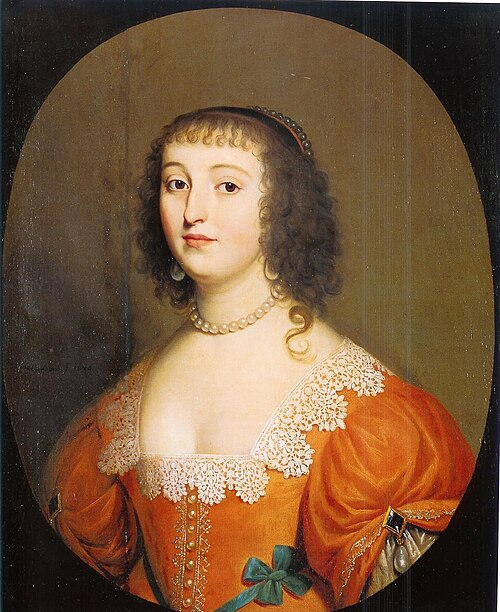
波希米亚的伊丽莎白（1618–1680）
"冬王"腓特烈五世之女，随家族流亡海牙。1643 年 5 月 6 日致信笛卡尔，问出了那个至今没有答案的问题：非广延的灵魂如何推动广延的身体。当时她二十四岁。
她不是笛卡尔的学生。Lisa Shapiro 2007 年的学术译注本之后，学界已将她重新定位为独立哲学家；斯坦福哲学百科为她单列词条。
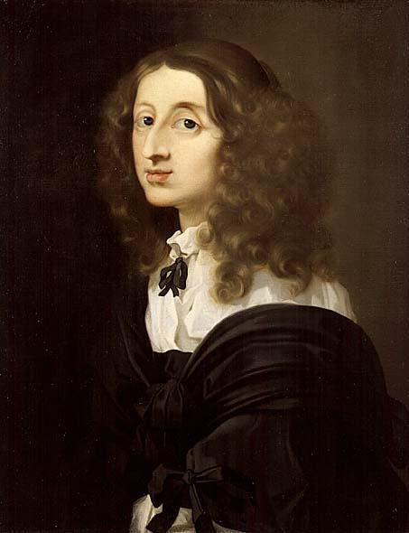
瑞典的克里斯蒂娜（1626–1689）
邀请笛卡尔赴斯德哥尔摩的女王，本人是当时欧洲最有学识的君主之一。这场邀请对笛卡尔是致命的。六年后她做了一件更惊人的事：退位、改宗天主教、移居罗马——而这正是笛卡尔一生小心翼翼避免的那类公开姿态。
反驳者
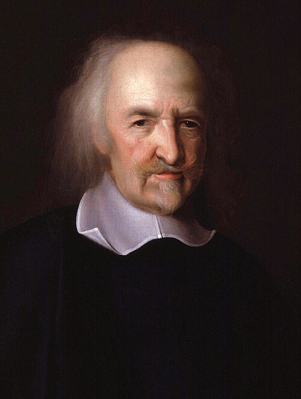
Thomas Hobbes（1588–1679）
唯物论者。"能思考的那个东西，凭什么不能本身就是物质的？"——这一问逼得笛卡尔承认，他最有名的第二沉思并没有证成非物质心灵。
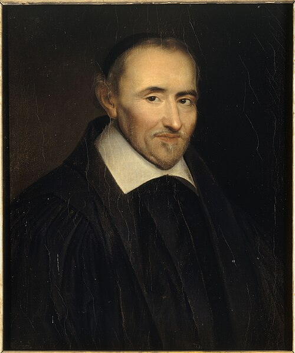
Pierre Gassendi（1592–1655）
伊壁鸠鲁主义的复兴者、经验论者。通篇以"哦，心灵"嘲讽笛卡尔。笛卡尔的回应短而轻蔑——这是七组交锋里他表现最差的一场。
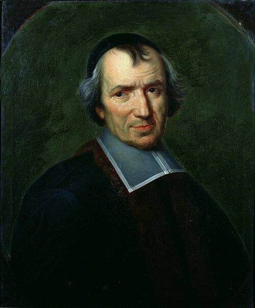
Antoine Arnauld（1612–1694）
波尔罗亚尔派神学家。指出了"笛卡尔循环"。值得注意的是他同情笛卡尔——最锋利的一刀，出自最善意的读者。
三个替他收拾残局的人
伊丽莎白提的那个问题，笛卡尔没能答上。此后三十年最重要的三个形而上学体系，都是为了绕开它而建的——而绕开的代价，是各自砍掉笛卡尔的一部分前提。
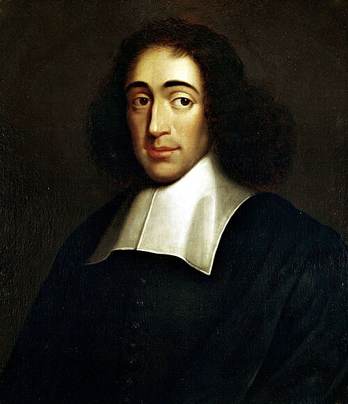
Baruch Spinoza（1632–1677）
只有一个实体，心与物是它的两种属性。不互动，只平行。他还写过一本《笛卡尔哲学原理》（1663），用几何学格式重述笛卡尔——注意别把这本书误当成笛卡尔本人的《哲学原理》。
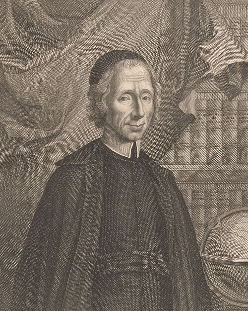
Nicolas Malebranche（1638–1715）
偶因论：真正的原因只有上帝。你的意志和你的手臂之间没有因果关系，只有上帝在两者之间的持续协调。
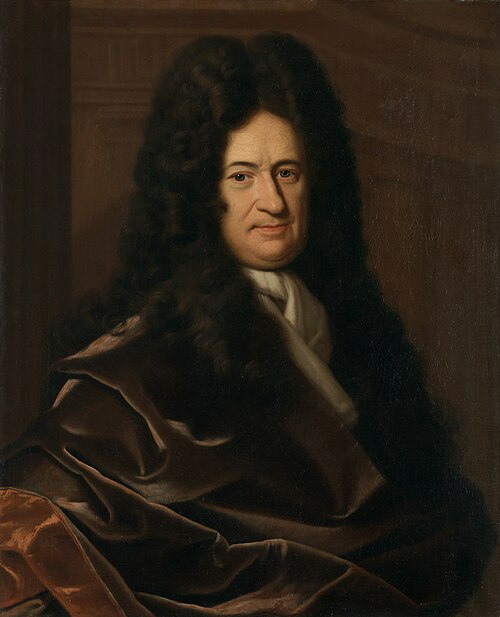
G. W. Leibniz（1646–1716）
预定和谐：单子没有窗户。心与身像两只在创世时就校准好的钟，永远同步，从不接触。
两位常被漏掉的女哲学家
Anne Conway（1631–1679）
指出二元论自相矛盾：你一边否认灵魂有广延和可分性，一边又用"位置""所在"这类空间语言描述它——等于偷偷把物质属性塞给了灵魂。她的结论是取消二元论，走向精神一元论。
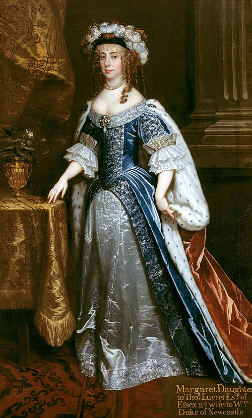
Margaret Cavendish（1623–1673）
活力论唯物主义者。她的方向与 Conway 相反：一切皆物质，而物质本身就有感知和运动的能力。两人的攻击点与伊丽莎白一致，路径各不相同。
三百年后的处决者
Gilbert Ryle（1900–1976）
《The Concept of Mind》第一章就叫"笛卡尔的神话"。"范畴错误"与"机器里的幽灵"两个说法出自这里，后者他自己说是"故意带侮辱性的"。
本页人物肖像与全站书影、插图均取自 Wikimedia Commons。 公有领域：笛卡尔（after Frans Hals）、梅森（Claude Duflos 刻）、伊丽莎白（Gerard van Honthorst）、克里斯蒂娜（Sébastien Bourdon）、霍布斯（John Michael Wright）、伽森狄（Louis-Édouard Rioult，19 世纪追想像，非同代肖像）、阿尔诺（Jean Baptiste de Champaigne）、斯宾诺莎（佚名）、莱布尼茨（Christoph Bernhard Francke）、卡文迪什（Peter Lely）；以及《谈谈方法》《沉思集》《哲学原理》《几何学》《屈光学》各扉页与插图、涡旋图（美国国会图书馆藏）、《论人》1664 年法文版反射图。 CC0：马勒伯朗士（阿姆斯特丹国立博物馆）。 CC BY 4.0：《论人》拉丁文版图版两幅（Wellcome Collection）。 CC BY-SA 3.0：丹尼尔·丹尼特（摄影：Dmitry Rozhkov）。 CC 授权作品依许可要求署名如上，原图与完整许可信息见 Commons 对应文件页。本站为非商业个人读书笔记，仅使用可自由传播的图片；如涉及版权问题，请通过 GitHub 仓库 issue 联系，我们将及时删除。